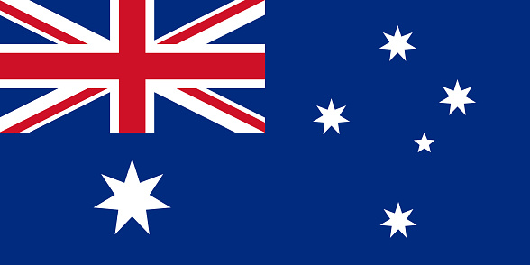
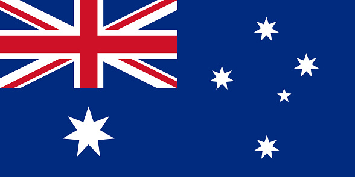

Who we are?
Chorus Call is a world-class international teleconferencing service provider headquartered in the United States. Chorus Call is also a market leader in designing and manufacturing multipoint audio and video conferencing platforms. We are a global leader in managed audio/video conferencing. We also conduct various corporate events, curating every event to perfection. We own the technology we bring to you and follow the highest standards on security globally. We serve a different need from DIY (Do It Yourself) platforms. Chorus Call adapts its service to the needs of its customers, both in designing customized conference solutions and in responding quickly to short-term conferences. To make every conference a success, to earn decades of loyalty from the most demanding and top-notch clients, to gain respect and admiration from others in the industry, it strives unparalleled for excellence. It's a hard work. But Chorus Call's hard work makes your choice simple.
 
